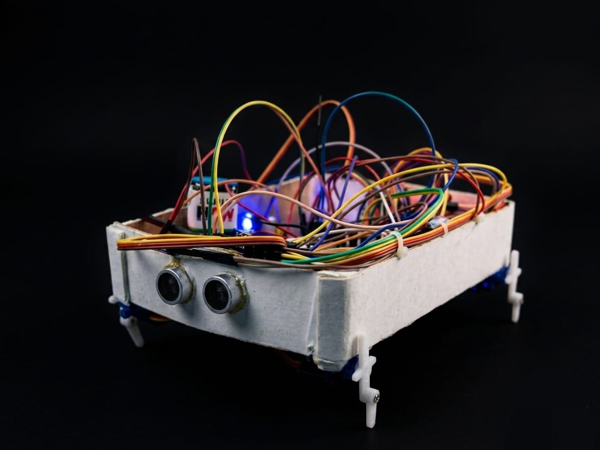

SPIDER: THE AETHER — A Four-Legged Platform for Disaster-Zone Reconnaissance
A spider-legged robot built to go where wheeled robots can't — over rubble, uneven ground, and tight gaps — controlled wirelessly from a browser-based interface served directly off the robot's own ESP32.

The actual prototype: a foam-board chassis, hand-wired breadboard electronics, and four servo legs — built to prove the locomotion and control concept, not to look production-ready.
Overview
After a disaster — an earthquake, a building collapse, a landslide — the terrain that first responders need to search is often exactly the terrain that wheeled or tracked robots handle worst: rubble piles, narrow voids, unstable footing. SPIDER: THE AETHER started as a direct response to that gap. It's a legged robot rather than a wheeled one, on the premise that a machine that walks can pick individual footholds the way a person or animal would, instead of needing continuous rollable ground. The current build is a proof-of-concept: four independently driven legs, an onboard sensor suite for obstacle and hazard awareness, and a Wi-Fi control link so an operator can drive it from a safe distance using nothing more than a phone or laptop browser.
The project name reflects its intended niche deliberately — "AETHER" as in operating in the open, unstructured air of a disaster site rather than a controlled lab floor — and the "spider" framing points at the core engineering bet: multi-legged locomotion trades some speed for the ability to traverse ground that would stop a wheeled platform outright.
As the photo above shows, this is deliberately a proof-of-concept build rather than a finished product: the chassis is foam board rather than a machined or 3D-printed shell, and the electronics are hand-wired on breadboard-style connections rather than a custom PCB. That was a conscious choice — at the prototype stage, the goal was to validate the gait, the sensing, and the wireless control loop as cheaply and quickly as possible, with the enclosure and wiring harness treated as a later-stage problem once the core mechanism was proven out.
System Architecture
The robot's architecture is deliberately centralized around the ESP32, both because it needed to be built and debugged by a small student team, and because a single microcontroller with built-in Wi-Fi removes an entire class of communication problems that come from splitting a robot's logic across multiple boards.
1. Locomotion Layer
Four servo motors — one per leg — are driven by the ESP32's PWM channels through a dedicated servo driver, with each leg's motion defined as a small lookup sequence of angles that together produce a walking gait. Turning is achieved by biasing the gait asymmetrically between the left and right leg pairs rather than needing a separate steering mechanism.
2. Sensing Layer
Two ultrasonic distance sensors, mounted front and rear, give the robot basic obstacle awareness so an operator (or, eventually, an autonomous routine) can detect a wall or rubble edge before driving into it. A smoke/gas sensor is also onboard, repurposing the same telemetry channel to give early warning of hazardous air — directly relevant to a disaster-response use case where smoke or gas leaks are a real risk to human responders following behind the robot.
3. Control Layer
Rather than requiring a companion app, the ESP32 runs a lightweight embedded web server and serves a control page directly over its own Wi-Fi access point. An operator connects to the robot's network, opens the page in any browser, and sends movement and sensor-poll commands over simple HTTP requests. This "robot serves its own UI" pattern removes an entire dependency (no app store, no pairing flow, no OS-specific client) at the cost of a slightly less polished interface than a native app would offer.
4. Physical Build
The chassis visible in the photo is cut and glued foam board — light, cheap, easy to re-cut when a sensor needed repositioning, and forgiving of the mistakes that come with a first hardware iteration. The visible tangle of jumper wires reflects a breadboard-first electronics approach: every signal line from the servos, ultrasonic sensors, and smoke sensor runs directly to the ESP32's GPIO headers rather than through a custom-etched board, which made debugging a matter of literally tracing a wire rather than probing hidden PCB traces. The onboard blue LED served as a simple status indicator during testing — on when the Wi-Fi access point was live and accepting connections.
Technical Challenges Overcome
- Gait stability on four legs: Four-legged locomotion is inherently less statically stable than six-legged (hexapod) designs, since fewer legs are on the ground at any instant. The team tuned the gait sequence so that at least two diagonally opposite legs remain planted at all times, which noticeably improved stability on uneven surfaces during testing.
- Servo current draw browning out the Wi-Fi radio: Driving four servos simultaneously from the same supply rail as the ESP32 caused voltage sags that intermittently reset the Wi-Fi connection. Separating the servo power rail from the logic rail, with a shared ground and a large enough bulk capacitor near the servos, resolved the brownouts.
- Command latency over Wi-Fi: Sending a new HTTP request for every single movement command introduced noticeable lag. Batching short movement sequences into a single request, rather than one request per step, cut perceived latency significantly.
- Sensor cross-talk: With two ultrasonic sensors mounted close together, one sensor's outgoing pulse would sometimes trigger the other's echo detector. Staggering the sensors' polling in time, rather than firing them simultaneously, eliminated the false readings this caused.
Key Code / Hardware Components
The gait engine is structured as a small state machine that steps through predefined leg-angle keyframes rather than computing inverse kinematics on the fly — a deliberate simplification that keeps the ESP32's control loop fast and predictable:
const int gaitSequence[4][4] = {
// {frontLeft, frontRight, backLeft, backRight} angles per phase
{90, 60, 60, 90},
{60, 90, 90, 60},
{90, 120, 120, 90},
{120, 90, 90, 120}
};
void stepGait() {
static int phase = 0;
for (int leg = 0; leg < 4; leg++) {
legServo[leg].write(gaitSequence[phase][leg]);
}
phase = (phase + 1) % 4;
}On the hardware side, the build centers on an ESP32 DevKit as the sole controller, four standard hobby servo motors for the legs, an HC-SR04 ultrasonic sensor pair for front/rear obstacle sensing, an MQ-series smoke sensor for hazard detection, and a separate battery pack for the servo rail to keep locomotion power isolated from the logic and radio supply.
Key Takeaways
SPIDER: THE AETHER was as much a lesson in power-system discipline as it was in robotics. It's tempting, especially on a student budget, to run every actuator and every microcontroller off one shared rail — but this project made it very concrete that mechanical actuation and radio communication compete for the same electrical headroom, and that competition shows up as mysterious, hard-to-reproduce bugs rather than a clean failure. It also reinforced the value of serving a robot's control interface directly from its own onboard web server: a solution that trades some visual polish for zero installation friction is often the right call for anything meant to be operated in the field, under time pressure, by someone who has never touched the system before.